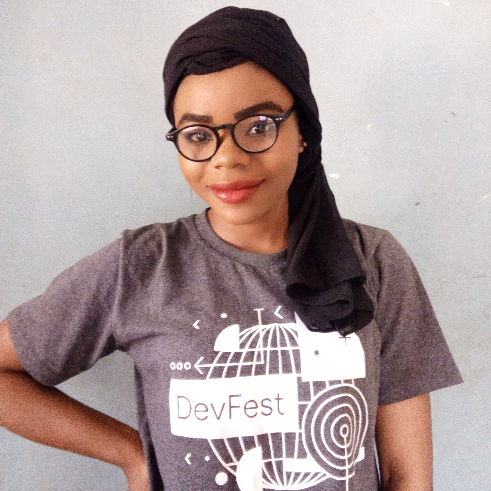
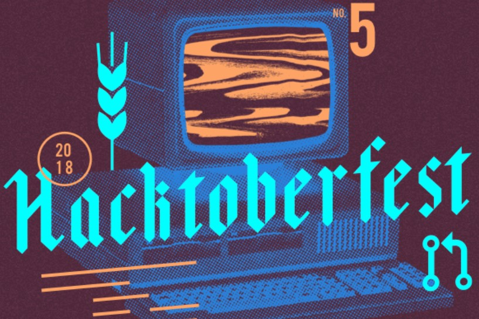

Hacktoberfest: For the first time

Memunat Manzuma
Last Update Apr 7th, 2019,
First Pull Request
https://github.com/zaarab001/women-tech-speakers-organizers
I began on October 15th. I was starting at a slight disadvantage already being a third of the way through the month and the
fact that i will have to clone or fork a repositoty first. The time crunch motivated me. I decided i would try to sumbit a pull
request every day for the rest of the month. Setting a schedule two or three days out of the work and tried not to stress the rest of
the time. Regardless of how ambitious your goal is, five pull requests in a month or five pull requests in a week: it's important to
have a plan. My first pull request was on Women Tech Speakers Organizers. I was glancing through some of the organizations on
github. I received a link massage to pull request fempire/women-tech-speakers-organizers. It was a simple fix but it provided
some needed confidence. There were indeed things out there that i could tackle!
The pull request was easy, I didn't fork or clone the repository, I opened it right on the Github page.
Boom First pull request opend.

Happy Moment
https://github.com/zaarab001
I didn't want all five pull requests to come from one repository (although there is nothing wrong with that). After a few pull
requests on other repositories, I started venturing out and exploring GitHub. I started by looking at projects i was familiar with.
Specifically, I browsed tools and projects that i had used a lot like C++, Python, Bootstrap and PHP among others.
Whenever possible i searched by issues tagged "Hacktoberfest" or "First Time Contributor".
It was really great and fun that made me not to stop there but made it a starting point, all thanks to the motivators.